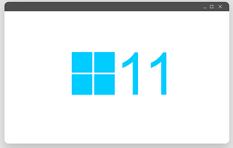

Todo lo que debes saber de OSs en 2022
¿Qué es un Sistema Operativo? Un OS, es el software (parte no tangible, que se programa en código) base que posee cualquier ordenador y sobre el que se ejecuta todo lo demás.
Hay muchas características a tener en cuenta para elegir. Vamos a trabajar este concepto para saber todo lo que debes saber a cerca de los SO.
Características técnicas
Arquitecturas soportadas: Básicamente, existen varios tipos de "modelos" de equipos (ARM, Intel, x86, DEC Alpha...). La compatibilidad con arquitecturas implica si el SO se puede usar en ese tipo de "modelo". Esto es importante para ver si es compatible con tu hardware, aunque normalmente no existen problemas de este tipo.
Interfaz Gráfica y procesamiento gráfico: Esto es básicamente con qué se encontrará el usuario cuando intente ejecutar acciones en su computadora (Terminal, Ventanas, ...). Además, se debe fijar en la calidad de los gráficos que el OS presenta, por ejemplo, Windows presenta una buena capacidad gráfica, mientras en Linux y MacOS es bastante deficiente en comparación.
Ligereza: Es la cantidad de recursos (y por tanto la carga) que gasta el sistema operativo en sí. Los hay muy ligeros, como algunas distribuciones (versiones) de Linux y los hay más pesados, como el novedoso Windows 11.
Soporte de la comunidad: Esto es, si ante un problema con el SO, tendrás ayuda disponible, por parte de los desarrolladores pero también de la comunidad, para solucionar el inconveniente.
Precio: Como habrán imaginado, no todos los Sistemas Operativos son gratuitos. Existen diversas licencias bajo las que se distribuyen y por tanto diferentes precios. La mayoría de los que son de pago tienen una versión más limitada gratuita.